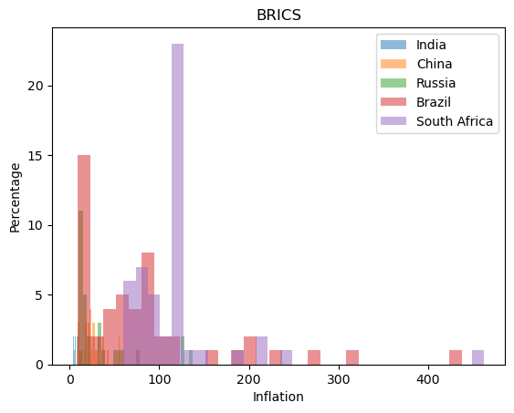
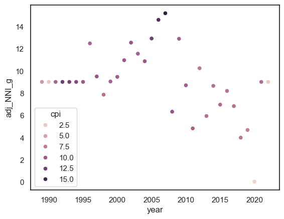
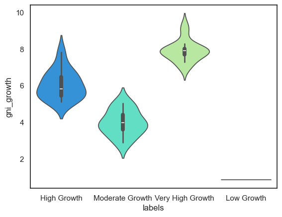
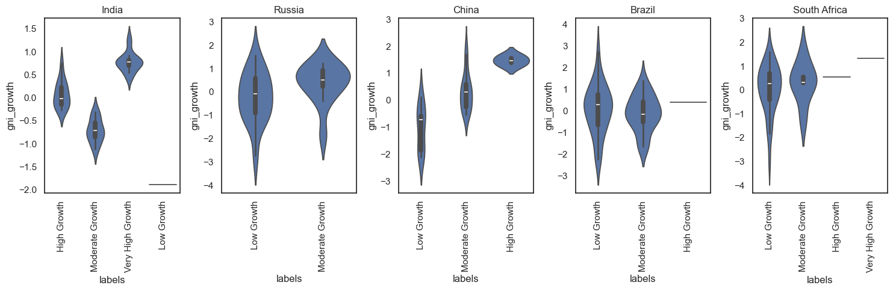
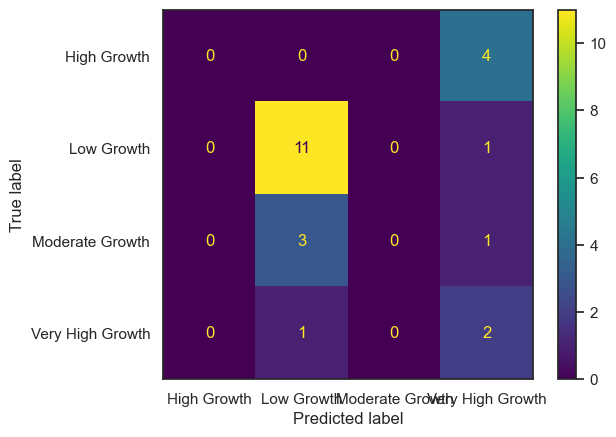
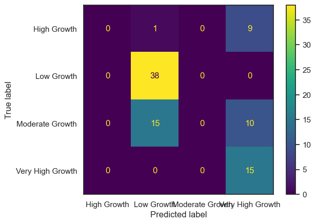

import pandas as pd
import seaborn as sns
import matplotlib.pyplot as plt
import numpy as np
import missingno as msnoindia=pd.read_csv('../data/india.csv')
russia=pd.read_csv('../data/russia.csv')
china=pd.read_csv('../data/china.csv')
brazil=pd.read_csv('../data/brazil.csv')
southafrica=pd.read_csv('../data/southafrica.csv')
stacked_df = pd.concat([india, russia, china, brazil, southafrica])stacked_df.isna().sum()year 0
adj_NNI_g 0
adj_NNI_c 0
adj_savings_fix_cap_GNI 0
adj_savings_edu_GNI 0
adj_NNS_GNI 0
curr_acc_bal 0
ex_imp_gdp 0
ex_imp_growth 0
ex_debt_shocks 0
final_consump_exp_gdp 34
final_consump_exp_growth 0
fdi_net_inflows 0
fdi_net_outflows 0
gdp_growth 0
gdp_per_capita_growth 0
gener_govt_fin_consump_exp 0
gni_growth 0
goods_exp_bop 0
goods_imp_bop 34
imports_goods_services_gdp 0
imports_goods_services_growth 0
services_gdp 0
services_growth 0
short_term_debt_tot_reserves 34
trade_gdp 0
cpi 0
inflation 0
real_interest_rate 0
lending_interest_rate 0
life_exp_birth 0
expense_gdp 0
interest_payments 0
military expenditure 0
year.1 50
labels 11
dtype: int64stacked_df = stacked_df.dropna()stacked_df.isna().sum()year 0
adj_NNI_g 0
adj_NNI_c 0
adj_savings_fix_cap_GNI 0
adj_savings_edu_GNI 0
adj_NNS_GNI 0
curr_acc_bal 0
ex_imp_gdp 0
ex_imp_growth 0
ex_debt_shocks 0
final_consump_exp_gdp 0
final_consump_exp_growth 0
fdi_net_inflows 0
fdi_net_outflows 0
gdp_growth 0
gdp_per_capita_growth 0
gener_govt_fin_consump_exp 0
gni_growth 0
goods_exp_bop 0
goods_imp_bop 0
imports_goods_services_gdp 0
imports_goods_services_growth 0
services_gdp 0
services_growth 0
short_term_debt_tot_reserves 0
trade_gdp 0
cpi 0
inflation 0
real_interest_rate 0
lending_interest_rate 0
life_exp_birth 0
expense_gdp 0
interest_payments 0
military expenditure 0
year.1 0
labels 0
dtype: int64stacked_df.drop(columns='year')| adj_NNI_g | adj_NNI_c | adj_savings_fix_cap_GNI | adj_savings_edu_GNI | adj_NNS_GNI | curr_acc_bal | ex_imp_gdp | ex_imp_growth | ex_debt_shocks | final_consump_exp_gdp | ... | cpi | inflation | real_interest_rate | lending_interest_rate | life_exp_birth | expense_gdp | interest_payments | military expenditure | year.1 | labels | |
|---|---|---|---|---|---|---|---|---|---|---|---|---|---|---|---|---|---|---|---|---|---|
| 0 | 11.978544 | 2.476830e+11 | 8.055168 | 2.600000 | 6.418183 | -0.958069 | 6.139551 | 5.237330 | 11.096107 | 87.498021 | ... | 9.737409 | 11.346073 | 4.476508 | 16.500000 | 53.611000 | 11.702478 | 13.780033 | 3.133781 | 1979.0 | High Growth |
| 1 | -2.572689 | 2.413109e+11 | 8.393346 | 2.600000 | 7.373027 | -1.394549 | 5.936027 | -0.816934 | 11.615484 | 85.768606 | ... | 11.014232 | 13.112547 | 5.118237 | 16.500000 | 54.175000 | 11.376034 | 14.073244 | 3.186248 | 1980.0 | High Growth |
| 2 | 1.626264 | 2.452352e+11 | 8.819348 | 3.051058 | 7.043158 | -1.257273 | 5.983300 | 6.020508 | 13.467614 | 85.319441 | ... | 11.883336 | 7.890743 | 7.774707 | 16.500000 | 54.732000 | 11.959873 | 15.563031 | 3.345118 | 1981.0 | Moderate Growth |
| 3 | 11.562099 | 2.735896e+11 | 8.419293 | 3.153437 | 7.024774 | -0.887438 | 5.837629 | -0.914918 | 14.101651 | 85.635851 | ... | 13.293660 | 11.868081 | 7.320987 | 16.500000 | 55.281000 | 12.077793 | 17.460567 | 3.323069 | 1982.0 | Very High Growth |
| 4 | 1.851968 | 2.786564e+11 | 8.784357 | 2.700000 | 7.097912 | -1.089317 | 6.283401 | 7.297852 | 15.530868 | 84.960526 | ... | 14.399548 | 8.318907 | 7.947100 | 16.500000 | 55.816000 | 13.142960 | 19.011381 | 3.416876 | 1983.0 | Moderate Growth |
| ... | ... | ... | ... | ... | ... | ... | ... | ... | ... | ... | ... | ... | ... | ... | ... | ... | ... | ... | ... | ... | ... |
| 45 | 1.084757 | 2.973289e+11 | -0.146507 | 14.267286 | 5.514553 | 13.954344 | -0.328763 | -3.008700 | 27.562640 | 2.741158 | ... | 1.981519 | 92.692307 | 54.627712 | 152.646240 | 4.517165 | 6.108760 | 65.674000 | 0.897196 | 2018.0 | Low Growth |
| 46 | 0.621565 | 2.991770e+11 | -0.673157 | 14.415053 | 5.820015 | 13.810482 | -0.595410 | -2.625377 | 27.297471 | -3.445217 | ... | 1.108507 | 80.819685 | 54.054766 | 158.935640 | 4.120246 | 5.243711 | 66.175000 | 0.884245 | 2019.0 | Low Growth |
| 47 | -5.191452 | 2.836454e+11 | -6.344067 | 15.342080 | 5.820015 | 14.898851 | -0.451413 | 1.984891 | 27.600303 | -11.862908 | ... | -4.398186 | 67.402320 | 50.800982 | 164.037531 | 3.210036 | 1.907151 | 65.252000 | 0.957517 | 2020.0 | Low Growth |
| 48 | 2.944993 | 1.726618e+11 | 1.019058 | 14.617378 | 5.340494 | 19.599354 | 4.980877 | 3.699256 | 31.193814 | 9.986850 | ... | 4.088044 | 63.010063 | 56.217980 | 171.602404 | 4.611672 | 0.774484 | 62.341000 | 0.809813 | 2021.0 | Very High Growth |
| 49 | 2.944993 | 1.726618e+11 | 1.019058 | 14.617378 | 5.340494 | 19.599354 | 4.980877 | -0.418256 | 33.443871 | 7.546529 | ... | 3.566733 | 119.946081 | 64.908850 | 183.682744 | 7.039727 | 3.557564 | 60.457939 | 0.739894 | 2022.0 | Moderate Growth |
111 rows × 35 columns
stacked_df.describe<bound method NDFrame.describe of year adj_NNI_g adj_NNI_c adj_savings_fix_cap_GNI \
0 1979 11.978544 2.476830e+11 8.055168
1 1980 -2.572689 2.413109e+11 8.393346
2 1981 1.626264 2.452352e+11 8.819348
3 1982 11.562099 2.735896e+11 8.419293
4 1983 1.851968 2.786564e+11 8.784357
.. ... ... ... ...
45 2018 1.084757 2.973289e+11 -0.146507
46 2019 0.621565 2.991770e+11 -0.673157
47 2020 -5.191452 2.836454e+11 -6.344067
48 2021 2.944993 1.726618e+11 1.019058
49 2022 2.944993 1.726618e+11 1.019058
adj_savings_edu_GNI adj_NNS_GNI curr_acc_bal ex_imp_gdp ex_imp_growth \
0 2.600000 6.418183 -0.958069 6.139551 5.237330
1 2.600000 7.373027 -1.394549 5.936027 -0.816934
2 3.051058 7.043158 -1.257273 5.983300 6.020508
3 3.153437 7.024774 -0.887438 5.837629 -0.914918
4 2.700000 7.097912 -1.089317 6.283401 7.297852
.. ... ... ... ... ...
45 14.267286 5.514553 13.954344 -0.328763 -3.008700
46 14.415053 5.820015 13.810482 -0.595410 -2.625377
47 15.342080 5.820015 14.898851 -0.451413 1.984891
48 14.617378 5.340494 19.599354 4.980877 3.699256
49 14.617378 5.340494 19.599354 4.980877 -0.418256
ex_debt_shocks ... cpi inflation real_interest_rate \
0 11.096107 ... 9.737409 11.346073 4.476508
1 11.615484 ... 11.014232 13.112547 5.118237
2 13.467614 ... 11.883336 7.890743 7.774707
3 14.101651 ... 13.293660 11.868081 7.320987
4 15.530868 ... 14.399548 8.318907 7.947100
.. ... ... ... ... ...
45 27.562640 ... 1.981519 92.692307 54.627712
46 27.297471 ... 1.108507 80.819685 54.054766
47 27.600303 ... -4.398186 67.402320 50.800982
48 31.193814 ... 4.088044 63.010063 56.217980
49 33.443871 ... 3.566733 119.946081 64.908850
lending_interest_rate life_exp_birth expense_gdp interest_payments \
0 16.500000 53.611000 11.702478 13.780033
1 16.500000 54.175000 11.376034 14.073244
2 16.500000 54.732000 11.959873 15.563031
3 16.500000 55.281000 12.077793 17.460567
4 16.500000 55.816000 13.142960 19.011381
.. ... ... ... ...
45 152.646240 4.517165 6.108760 65.674000
46 158.935640 4.120246 5.243711 66.175000
47 164.037531 3.210036 1.907151 65.252000
48 171.602404 4.611672 0.774484 62.341000
49 183.682744 7.039727 3.557564 60.457939
military expenditure year.1 labels
0 3.133781 1979.0 High Growth
1 3.186248 1980.0 High Growth
2 3.345118 1981.0 Moderate Growth
3 3.323069 1982.0 Very High Growth
4 3.416876 1983.0 Moderate Growth
.. ... ... ...
45 0.897196 2018.0 Low Growth
46 0.884245 2019.0 Low Growth
47 0.957517 2020.0 Low Growth
48 0.809813 2021.0 Very High Growth
49 0.739894 2022.0 Moderate Growth
[111 rows x 36 columns]># Visual Data Representation# Histogramsfig, ax = plt.subplots()
ax.hist(india["inflation"], bins=30, alpha=0.5, label='India')
ax.hist(china["inflation"], bins=30, alpha=0.5, label='China')
ax.hist(russia["inflation"], bins=30, alpha=0.5, label='Russia')
ax.hist(brazil["inflation"], bins=30, alpha=0.5, label='Brazil')
ax.hist(southafrica["inflation"], bins=30, alpha=0.5, label='South Africa')
ax.set_xlabel('Inflation')
ax.set_ylabel('Percentage')
ax.set_title('BRICS')
ax.legend()
plt.show()
# Scatterplotsfig= plt.figure(figsize=(18, 9))
fig.suptitle('Trade Analysis')
ax1= fig.add_subplot(331)
ax1.set_title('India')
ax1.plot(india['year'],
india['trade_gdp'],
color='blue')
ax2= fig.add_subplot(332)
ax2.set_title('China')
ax2.plot(china['year'],
china['trade_gdp'],
color='brown')
ax3= fig.add_subplot(333)
ax3.set_title('Russia')
ax3.plot(russia['year'],
russia['trade_gdp'],
color='pink')
ax4= fig.add_subplot(334)
ax4.set_title('South Africa')
ax4.plot(southafrica['year'],
southafrica['trade_gdp'],
color='pink')
ax5= fig.add_subplot(335)
ax5.set_title('Brazil')
ax5.plot(brazil['year'],
brazil['trade_gdp'],
color='orange')# Create a Matplotlib figure and axis
fig, ax = plt.subplots(figsize=(10, 6))
# Create a boxplot for all numerical columns in the DataFrame
india.boxplot(ax=ax)
# Add labels and a title
ax.set_ylabel('Value')
ax.set_title('India')
# Show the plot
plt.xticks(rotation=45)
plt.show()
fig, ax = plt.subplots(figsize=(10, 6))
russia.boxplot(ax=ax)
ax.set_ylabel('Value')
ax.set_title('Russia')
plt.xticks(rotation=45)
plt.show()
fig, ax = plt.subplots(figsize=(10, 6))
china.boxplot(ax=ax)
ax.set_ylabel('Value')
ax.set_title('China')
plt.xticks(rotation=45)
plt.show()
fig, ax = plt.subplots(figsize=(10, 6))
southafrica.boxplot(ax=ax)
ax.set_ylabel('Value')
ax.set_title('South Africa')
plt.xticks(rotation=90)
plt.show()
fig, ax = plt.subplots(figsize=(10, 6))
brazil.boxplot(ax=ax)
ax.set_ylabel('Value')
ax.set_title('Brazil')
plt.xticks(rotation=45)
plt.show()
sns.set_theme(style="white")
corr = india.corr(numeric_only=True) #Computing correlation matrix
mask = np.triu(np.ones_like(corr, dtype=bool))
f, ax = plt.subplots(figsize=(7, 5))
cmap = sns.diverging_palette(230, 20, as_cmap=True)
sns.heatmap(corr, mask=mask, cmap=cmap, vmax=.3, center=0,
square=True, linewidths=.5, cbar_kws={"shrink": .5})
plt.show()
sns.set_theme(style="white")
corr = china.corr(numeric_only=True) #Computing correlation matrix
mask = np.triu(np.ones_like(corr, dtype=bool))
f, ax = plt.subplots(figsize=(7, 5))
cmap = sns.diverging_palette(230, 20, as_cmap=True)
sns.heatmap(corr, mask=mask, cmap=cmap, vmax=.3, center=0,
square=True, linewidths=.5, cbar_kws={"shrink": .5})
plt.show()
sns.set_theme(style="white")
corr = russia.corr(numeric_only=True) #Computing correlation matrix
mask = np.triu(np.ones_like(corr, dtype=bool))
f, ax = plt.subplots(figsize=(7, 5))
cmap = sns.diverging_palette(230, 20, as_cmap=True)
sns.heatmap(corr, mask=mask, cmap=cmap, vmax=.3, center=0,
square=True, linewidths=.5, cbar_kws={"shrink": .5})
plt.show()
sns.set_theme(style="white")
corr = southafrica.corr(numeric_only=True) #Computing correlation matrix
mask = np.triu(np.ones_like(corr, dtype=bool))
f, ax = plt.subplots(figsize=(7, 5))
cmap = sns.diverging_palette(230, 20, as_cmap=True)
sns.heatmap(corr, mask=mask, cmap=cmap, vmax=.3, center=0,
square=True, linewidths=.5, cbar_kws={"shrink": .5})
plt.show()
sns.set_theme(style="white")
corr = brazil.corr(numeric_only=True) #Computing correlation matrix
mask = np.triu(np.ones_like(corr, dtype=bool))
f, ax = plt.subplots(figsize=(7, 5))
cmap = sns.diverging_palette(230, 20, as_cmap=True)
sns.heatmap(corr, mask=mask, cmap=cmap, vmax=.3, center=0,
square=True, linewidths=.5, cbar_kws={"shrink": .5})
plt.show()
fig, axes = plt.subplots(1, 5, figsize=(15, 5))
sns.scatterplot(data=india, x="year", y="adj_NNI_g", hue='cpi', ax=axes[0])
axes[0].set_title('India')
sns.scatterplot(data=russia, x="year", y="adj_NNI_g", hue='cpi', ax=axes[1])
axes[1].set_title('Russia')
sns.scatterplot(data=china, x="year", y="adj_NNI_g", hue='cpi', ax=axes[2])
axes[2].set_title('China')
sns.scatterplot(data=brazil, x="year", y="adj_NNI_g", hue='cpi', ax=axes[3])
axes[3].set_title('Brazil')
sns.scatterplot(data=southafrica, x="year", y="adj_NNI_g", hue='cpi', ax=axes[4])
axes[4].set_title('South Africa')
plt.tight_layout()
plt.show()
sns.scatterplot(data=china, x="year", y="adj_NNI_g", hue='cpi')<Axes: xlabel='year', ylabel='adj_NNI_g'>
sns.scatterplot(data=southafrica, x="year", y="adj_NNI_g", hue='cpi')<Axes: xlabel='year', ylabel='adj_NNI_g'>
sns.violinplot(x="labels", y="gni_growth", data=india,palette='rainbow')/var/folders/cm/1bq_zvw92w99j_5d1p5jq5v40000gn/T/ipykernel_54611/431432563.py:1: FutureWarning:
Passing `palette` without assigning `hue` is deprecated and will be removed in v0.14.0. Assign the `x` variable to `hue` and set `legend=False` for the same effect.
sns.violinplot(x="labels", y="gni_growth", data=india,palette='rainbow')<Axes: xlabel='labels', ylabel='gni_growth'>
fig, axes = plt.subplots(1, 5, figsize=(15, 5))
sns.violinplot(x="labels", y="gni_growth", data=india, ax=axes[0])
axes[0].set_title('India')
sns.violinplot(x="labels", y="gni_growth", data=russia, ax=axes[1])
axes[1].set_title('Russia')
sns.violinplot(x="labels", y="gni_growth", data=china, ax=axes[2])
axes[2].set_title('China')
sns.violinplot(x="labels", y="gni_growth", data=brazil, ax=axes[3])
axes[3].set_title('Brazil')
sns.violinplot(x="labels", y="gni_growth", data=southafrica, ax=axes[4])
axes[4].set_title('South Africa')
for ax in axes:
ax.set_xticklabels(ax.get_xticklabels(), rotation=90)
plt.tight_layout()
plt.show()/var/folders/cm/1bq_zvw92w99j_5d1p5jq5v40000gn/T/ipykernel_54611/980302243.py:13: UserWarning: FixedFormatter should only be used together with FixedLocator
ax.set_xticklabels(ax.get_xticklabels(), rotation=90)
# links used
# https://towardsdatascience.com/data-visualization-using-matplotlib-16f1aae5ce70
# https://nbviewer.org/github/BadreeshShetty/Data-Visualization-using-Matplotlib/blob/master/%281%29Histograms.ipynbY = stacked_df['labels']
X = stacked_df.drop(['labels'],axis =1)from sklearn.model_selection import train_test_split
X_train, X_test, y_train, y_test = train_test_split(X, Y, random_state=42, test_size=0.2)
x_train_valid, x_valid_test, y_train_valid, y_valid_test = train_test_split(X_test, y_test, test_size=0.5, random_state=0)
print('Train data :'+str(X_train.shape))
print('Test data :'+str(X_test.shape))
print('Train Output :'+str(y_train.shape))
print('Test Output :'+str(y_test.shape))
print('Valid Train data :'+str(x_train_valid.shape))
print('Valid Test data :'+str(x_valid_test.shape))
print('Valid Train Output :'+str(y_train_valid.shape))
print('Valid Test Output :'+str(y_valid_test.shape))Train data :(88, 35)
Test data :(23, 35)
Train Output :(88,)
Test Output :(23,)
Valid Train data :(11, 35)
Valid Test data :(12, 35)
Valid Train Output :(11,)
Valid Test Output :(12,)from sklearn import preprocessing
yop=[]
for i in Y:
yop.append(str(i))
le = preprocessing.LabelEncoder()
Y_op = le.fit_transform(yop)
le.classes_array(['High Growth', 'Low Growth', 'Moderate Growth', 'Very High Growth'],
dtype='<U16')corr=stacked_df.corr
corr<bound method DataFrame.corr of year adj_NNI_g adj_NNI_c adj_savings_fix_cap_GNI \
0 1979 11.978544 2.476830e+11 8.055168
1 1980 -2.572689 2.413109e+11 8.393346
2 1981 1.626264 2.452352e+11 8.819348
3 1982 11.562099 2.735896e+11 8.419293
4 1983 1.851968 2.786564e+11 8.784357
.. ... ... ... ...
45 2018 1.084757 2.973289e+11 -0.146507
46 2019 0.621565 2.991770e+11 -0.673157
47 2020 -5.191452 2.836454e+11 -6.344067
48 2021 2.944993 1.726618e+11 1.019058
49 2022 2.944993 1.726618e+11 1.019058
adj_savings_edu_GNI adj_NNS_GNI curr_acc_bal ex_imp_gdp ex_imp_growth \
0 2.600000 6.418183 -0.958069 6.139551 5.237330
1 2.600000 7.373027 -1.394549 5.936027 -0.816934
2 3.051058 7.043158 -1.257273 5.983300 6.020508
3 3.153437 7.024774 -0.887438 5.837629 -0.914918
4 2.700000 7.097912 -1.089317 6.283401 7.297852
.. ... ... ... ... ...
45 14.267286 5.514553 13.954344 -0.328763 -3.008700
46 14.415053 5.820015 13.810482 -0.595410 -2.625377
47 15.342080 5.820015 14.898851 -0.451413 1.984891
48 14.617378 5.340494 19.599354 4.980877 3.699256
49 14.617378 5.340494 19.599354 4.980877 -0.418256
ex_debt_shocks ... cpi inflation real_interest_rate \
0 11.096107 ... 9.737409 11.346073 4.476508
1 11.615484 ... 11.014232 13.112547 5.118237
2 13.467614 ... 11.883336 7.890743 7.774707
3 14.101651 ... 13.293660 11.868081 7.320987
4 15.530868 ... 14.399548 8.318907 7.947100
.. ... ... ... ... ...
45 27.562640 ... 1.981519 92.692307 54.627712
46 27.297471 ... 1.108507 80.819685 54.054766
47 27.600303 ... -4.398186 67.402320 50.800982
48 31.193814 ... 4.088044 63.010063 56.217980
49 33.443871 ... 3.566733 119.946081 64.908850
lending_interest_rate life_exp_birth expense_gdp interest_payments \
0 16.500000 53.611000 11.702478 13.780033
1 16.500000 54.175000 11.376034 14.073244
2 16.500000 54.732000 11.959873 15.563031
3 16.500000 55.281000 12.077793 17.460567
4 16.500000 55.816000 13.142960 19.011381
.. ... ... ... ...
45 152.646240 4.517165 6.108760 65.674000
46 158.935640 4.120246 5.243711 66.175000
47 164.037531 3.210036 1.907151 65.252000
48 171.602404 4.611672 0.774484 62.341000
49 183.682744 7.039727 3.557564 60.457939
military expenditure year.1 labels
0 3.133781 1979.0 High Growth
1 3.186248 1980.0 High Growth
2 3.345118 1981.0 Moderate Growth
3 3.323069 1982.0 Very High Growth
4 3.416876 1983.0 Moderate Growth
.. ... ... ...
45 0.897196 2018.0 Low Growth
46 0.884245 2019.0 Low Growth
47 0.957517 2020.0 Low Growth
48 0.809813 2021.0 Very High Growth
49 0.739894 2022.0 Moderate Growth
[111 rows x 36 columns]># using pearson
corr = stacked_df.corr(numeric_only=True)
corr_matrix = corr.stack()
positive_corr = corr_matrix[corr_matrix > 0]
positive_top = positive_corr.sort_values(ascending=True)
positive_top = positive_top.head(10)
print(positive_top)NameError: name 'stacked_df' is not definedcorr = stacked_df.corr(numeric_only=True)
corr_matrix = correlation_matrix.stack()
negative_corr = corr_matrix[corr_matrix < 0]
negative_bottom = negative_corr.sort_values(ascending=True)
negative_bottom = negative_bottom.head(10)
print(negative_bottom)final_consump_exp_gdp fdi_net_inflows -0.979383
fdi_net_inflows final_consump_exp_gdp -0.979383
final_consump_exp_gdp interest_payments -0.945499
interest_payments final_consump_exp_gdp -0.945499
real_interest_rate final_consump_exp_gdp -0.939753
final_consump_exp_gdp real_interest_rate -0.939753
services_growth -0.919109
services_growth final_consump_exp_gdp -0.919109
final_consump_exp_gdp curr_acc_bal -0.892012
curr_acc_bal final_consump_exp_gdp -0.892012
dtype: float64import pandas as pd
from sklearn.model_selection import train_test_split
from sklearn.naive_bayes import GaussianNB
from sklearn.metrics import accuracy_score, precision_score, recall_score, f1_score, confusion_matrix, ConfusionMatrixDisplaynaive_bayes = GaussianNB()
naive_bayes.fit(X_train, y_train)GaussianNB()In a Jupyter environment, please rerun this cell to show the HTML representation or trust the notebook.
On GitHub, the HTML representation is unable to render, please try loading this page with nbviewer.org.
GaussianNB()
pred_valid = naive_bayes.predict(x_valid)def accuracy(y,ypred):
#compute accuracy
print("Accuracy:", accuracy_score(y, ypred)*100)
def precision(y,ypred):
#compute precision
print("Precision Score:", precision_score(y, ypred, average="micro")*100)
def recall(y,ypred):
#compute recall
print("Recall Score:", recall_score(y, ypred, average="micro")*100)
def f1(y,ypred):
#compute f1
print("F1 Score:", f1_score(y, ypred, average="micro")*100)# Predicting the train data and test data
pred_train = naive_bayes.predict(X_train)
pred_test = naive_bayes.predict(X_test)# Training data
accuracy(y_train, pred_train)
precision(y_train, pred_train)
recall(y_train, pred_train)
f1(y_train, pred_train)
Accuracy: 60.22727272727273
Precision Score: 60.22727272727273
Recall Score: 60.22727272727273
F1 Score: 60.22727272727273# Testing Data
accuracy(y_test, pred_test)
precision(y_test, pred_test)
recall(y_test, pred_test)
f1(y_test, pred_test)Accuracy: 56.52173913043478
Precision Score: 56.52173913043478
Recall Score: 56.52173913043478
F1 Score: 56.52173913043478# Validation
accuracy(y_valid, pred_valid)
precision(y_valid, pred_valid)
recall(y_valid, pred_valid)
f1(y_valid, pred_valid)Accuracy: 75.0
Precision Score: 75.0
Recall Score: 75.0
F1 Score: 75.0<sklearn.metrics._plot.confusion_matrix.ConfusionMatrixDisplay at 0x2aef4b2b0>
